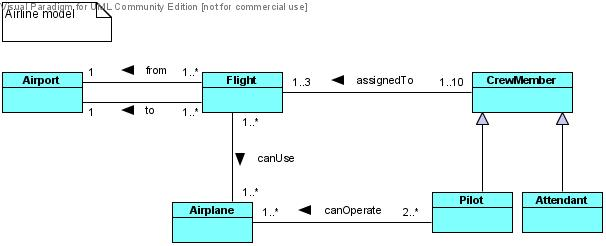

2.
- A UML mode is given below.

- The CrewMember class could be abstract.
- The following class schemas implement the inverse relations of from and to only.
class Flight
{
String flightNum;
String departureTime;
String arrivalTime;
Airport from;
Airport to;
Set<Airplane> canUse;
}
class Airplane
{
String IDNum;
String modelName;
int capacity;
int maxFlightTime; // in minutes
}
class Airport
{
String name;
String code;
Set<Flight> departureFlights; // the inverse relation of Flight.from
Set<Flight> arrivalFlights; // the inverse relation of Flight.to
}
class CrewMember
{
String IDnum;
String name;
int age;
Set<Flight> assignedTo;
}
class Pilot extends CrewMember
{
String rank;
int experienceInNumberOfYears;
Set<Airplane> canOperate;
}
class Attendant extends CrewMember
{
String position;
}
- Each crew member is assigned to at least one flight and at most three flights.
Each flight is assigned at least one crew member and at most 10 crew members.
- The multiplicities of 1, 1..3 would require that each flight be assigned exactly
one crew member.
This is not a valid constraint for most airline companies (an exception would
be an airline company specializing in small, one-pilot, Cessna-type airplanes.)
- Incorrect, as there may be multiple flights with the identical departure and arrival times
from/to different airports.
4.
2.
class Data
{ ... }
class BinTree
{
Data data;
BinTree leftSubtree;
BinTree rightSubtree;
}
3. The class schemas below implement all the inverse relations.
class TextBlock
{
String blockType;
String blockTitle;
int blockNumber;
Summary summary;
Set<TextContents> textContents;
Set<TextBlock> contains;
TextBlock isContainedIn; // the inverse relation of "contains"
}
class Summary
{
TextBlock summaryOf; // the inverse relation of TextBlock.summary
String text;
}
class TextContents
{
TextBlock textContentsOf; // the inverse relation of TextBlock.textContents
String text;
}
9.
- Automobiles – Vans inheritance
- Automobiles – Engines whole-part
- Newspapers – Sports Sections whole-part
- Newspapers – Weekly Newspapers inheritance
- Books – Mystery Books inheritance
- Books – Paperback Books inheritance
- Books – Chapters whole-part
- Computers – Laptop Computers inheritance
- Computers – CPUs whole-part
- Highways – Interstate Highways inheritance
- Highways – Exits whole-part
11.
- Highways – Interchanges. Weak composition. An interchange is a part of two or more highways.
- States – Cities. Should be strong composition in most cases as each city belongs to a unique state and
deletion of a state would entail deletion of all its cities.
In some applications though, cities might have to be kept in the DB even if their states are deleted –
in this case weak composition is suitable.
- States – State Parks. Analogous to the States-Cities case.
- Roads – Intersections. Weak composition. An intersection is a part of two or more roads.
- Cities – Airports. Analogous to the States-Cities case.